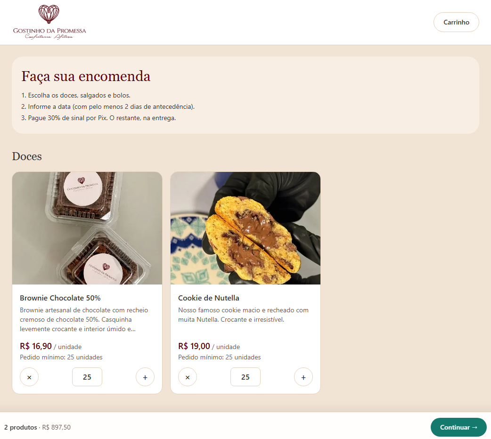
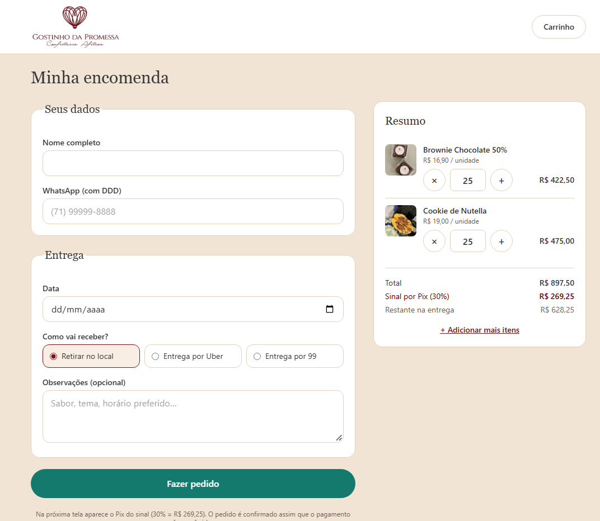

Em produção
Site de encomendas — Gostinho da Promessa
Hub de encomendas da confeitaria da minha irmã. O cliente monta o pedido, escolhe a data e paga 30% de sinal por Pix; o restante fica para a entrega. A página também reúne os itens prontos no iFood e os contatos do Instagram e do WhatsApp.
O que eu fiz
Idealizei e conduzi o projeto: o fluxo do pedido, as regras de negócio e o que precisava ser protegido. O desenvolvimento foi assistido por IA a partir dessas definições.
- O preço é calculado no servidor, nunca no navegador. O cliente envia só o produto e a quantidade. Sem isso, qualquer pessoa editaria o HTML e mandaria um pedido de brigadeiro a um centavo.
- Sinal de 30% por Pix, com o restante pago na entrega. O resumo mostra os dois valores separados, para o cliente não se assustar nem se confundir na hora de pagar.
- Antecedência mínima de 2 dias e pedido mínimo por produto, porque a produção é artesanal e tem limite.
- Proteção dos dados dos clientes no banco (RLS). A chave do banco fica exposta no navegador, então a regra de quem pode ler o quê precisa estar no próprio banco, e não só na tela.
As telas


Tecnologias
Next.js · TypeScript · Supabase (Postgres com RLS) · Tailwind · Netlify